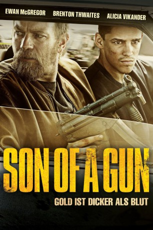
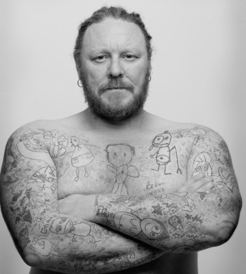

#3184 Son of a Gun
 
 IMDB-Wertung: 6.5 / 10
IMDB-Wertung: 6.5 / 10  Metascore: 49
Metascore: 49 
Der neunzehnjährige JR hat Glück, dass er gleich am Anfang seiner sechs Monate im Knast Gangster-Schwergewicht Brendon Lynch positiv auffällt. Sonst hätte er wie sein Zellengenosse als Sexobjekt der schweren Jungs enden können. Doch Lynch stellt JR unter seinen Schutz. Dafür hat der Junge einiges für den Boss zu organisieren, wenn er wieder draußen ist. Denn der hat keineswegs vor, die nächsten 20 Jahre hinter Gittern zu verbringen. Er will abhauen und dafür kann er JRs Hilfe brauchen. In der Zwischenzeit lernt JR von seinem Beschützer viel Nützliches. Draußen wartet nämlich fette Beute, sie muss nur fachgerecht abgeräumt werden. Allerdings kommen Gier und Verrat auch schnell ins Spiel, wenn es um richtig viel Kohle geht ...
Jahr: 2014
Dauer: 108 Minuten
FSK: 16
Land: Australien Studio: Ascot Elite Home EntertainmentTonspuren: DTS - ,
Untertitel: Deutsch,
Auflösung: 1080p (1920x800) Größe: 4679 MB
Genre: Action, Thriller, Drama, Krimi
Regisseur: Julius Avery
Drehbuch: Julius Avery, John Collee
Soundtrack: Jed Kurzel
Darsteller:
 Brenton Thwaites als JR
Brenton Thwaites als JR- Peter Neaves als Prison Officer
 Ewan McGregor als Brendan Lynch
Ewan McGregor als Brendan Lynch Matt Nable als Sterlo
Matt Nable als Sterlo-  Eddie Baroo als Merv
- Sam Hutchin als Dave
- Jared De' Har als Dave's Crony
 Jacek Koman als Sam Lennox
Jacek Koman als Sam Lennox Tom Budge als Josh
Tom Budge als Josh Alicia Vikander als Tasha
Alicia Vikander als Tasha Damon Herriman als Wilson
Damon Herriman als Wilson Nash Edgerton als Chris
Nash Edgerton als Chris- Nick Britton als Guy in Club
- Stephanie Power als Gold Room Supervisor
- Warwick Sadler als Wounded Staff Member
- John Boxer als Wayne
- Sarah Filippi als Airport Clerk
- Jenelle Altinier als Strip Club Patron , uncredited
- Olivia Charlotte als Beach Girl , uncredited
- Troy Coward als Party Guest , uncredited
- Korum Ellis als Beach Go-er , uncredited
- Tanya Jade als Function Staff , uncredited
- Simon Lockwood als Drug Addict / Prisoner , uncredited
- Jesse McGinn als Swimsuit Girl , uncredited
- Isaac Money als Beach Teen , uncredited
- David Partridge als Guy in Club , uncredited
- Adam T Perkins als Party Guest , uncredited
- Anna Philp als Party Patron Extra , uncredited
- Phoenix Raei als Party Guest , uncredited
- Luke Thornley als Paying Customer , uncredited
- Rick Tonna als Russian #1 , uncredited
- Jeff Watkins als TRG Officer , uncredited
- Ben Weirheim als Nightclub Patron , uncredited
- Tammie West als Girl in Bikini , uncredited
- Brendan Kerkvliet als Prison Officer
- Matt Flannagan als Prison Officer
- Geoff Kelso als Prison Officer
- Kazimir Sas als JR's Cellmate
- Craig Sparrowhawk als Dave's Crony
- Karl Knight als Solitary Officer
- Marko Jovanovic als Ken
- Ivan Lightbody als Mitch
- Soa Palelei als Tommy
- Lucas Brown als Andy
- Andrew Douglas Menzies als Helicopter Pilot
- Graham Jahne als Prison Officer in Breakout
- Vicky May als Prison Officer in Breakout
- Steve Newson als Prison Officer in Breakout
- Courtney Hart als Guy in Club
- David Thomson als Guy in Club
Datei: X:\2014(N-Z)\Son of a Gun (2014, FSK16, 1920x800).mkv seit 10.02.2016
Festplatte: HD 2013(I-Z)-2014(A-Z)
 Es gibt insgesamt 163 Filme in der Gruppe '2014(N-Z)'
Es gibt insgesamt 163 Filme in der Gruppe '2014(N-Z)'